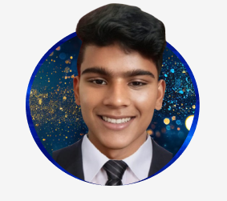

A Praveen
Bachelor of Engineering(CSE)
Sona Collage of Technology
Salem,Tamilnadu.
Graduation : 03/2026
Email :Microsoft email
Linkedin
Summary
Enthusiastic and detail-oriented software developer with a strong foundation in Java, Basic DBMS, Android, and Web Development.Adept at designing, developing, and maintaining applications across various platforms. Passionate about
learning new technologies and improving coding skills.
Skills
Technical Skills
1.Programming Languages : Java
2.DataBase Managment System : Basic DBMS
3.Mobile App Development : Android Studio [kotlin]
4.Tools :[Figma ,Eclipse, IntelliJ IDEA]
Certifications
Intership
Projects
Chatting app
Description:
Developed a real-time chatting application for Android using Java, aimed at enabling users to communicate seamlessly through text, voice, and multimedia messages.
The app incorporates user authentication and a user-friendly interface to enhance user experience.
Key Features:
User Authentication : Implemented a secure sign-up and login system using Firebase Authentication, allowing users to create accounts and log in easily.
Real-time Messaging : Utilized Firebase Realtime Database for instant message delivery, ensuring messages are delivered and displayed in real-time.
Multimedia Support : Enabled users to send and receive images, videos, and voice messages, enhancing communication beyond text.
User Profiles : Created customizable user profiles, allowing users to set profile pictures and status messages.
Push Notifications : Integrated Firebase Cloud Messaging to notify users of new messages even when the app is not active.
Group Chats : Developed functionality for users to create and join group chats, facilitating communication among multiple users.
Technologies Used:
Programming Language : Kotlin
Frameworks : Firebase for backend services
Tools : Android Studio for app development, Git for version control
Impact : This project provided hands-on experience in mobile app development and reinforced my skills in working with real-time databases
and user authentication. It also honed my understanding of UI/UX design principles, resulting in an intuitive and engaging user interface.
Languages
Tamil :First Language
English :Advanced
Japanese :Beginner[JLPY N5].
Future Goals
1.Data Scientist
2.Web Developer
3.Japanese [JLPT N4]
Conclusion
* One of my key interests is geopolitics. I am fascinated by how geographic factors influence global power dynamics and international relations.
Understanding the interplay between geography, politics, and economics helps me appreciate the complexities of our world. I enjoy staying updated
on current geopolitical events and analyzing their potential impacts on global stability and development.
* In addition to my academic pursuits, I am passionate about exploring new technologies and their implications for society. I believe that
a solid grasp of geopolitics, combined with technological expertise, can contribute to innovative solutions for global challenges.